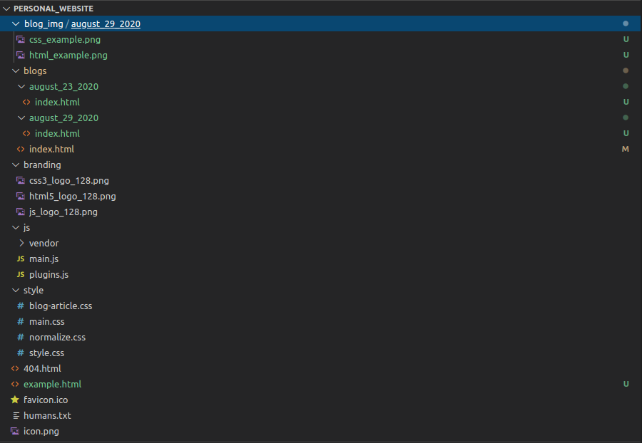

This will be a short article with resources to point you in the right direction while learning to make your first website. I won't explicitly teach you how to write HTML or CSS, but I will give you the tools needed, so you can start writing up your own websites soon enough. I believe there are enough tutorials and quality content on these two subjects for everyone to discover.
Definitions
Two files are used when writing a website. The first one will be a ".html" file for the layout and content. The second one, which is optional (though recommended), a ".css" file for styling almost every aspect of your page you can imagine.
HTML: Stands for "Hypertext Markup Language". The browser takes the .html file and "transform's" (goes through a parser) to the "DOM" (Document Object Model.
Read more about how a browser works here.
Here is an example:
CSS: Stands for "Cascading Stylesheet". Usually linked in your ".html" file, here you can select parts of your HTML and style them in many different ways.
Here is an example:
How I learned HTML and CSS
My journey began in February 2020. I was looking for something I could learn by myself and that would be job ready in the near future. I tried searching the web for answers, not really sure what I was looking for. That was until I stumbled upon FreeCodeCamp.
Check out FreeCodeCamp here.
Anyone who is starting out today, even if not sure this is something you want to pursue, should take a look at what FCC (FreeCodeCamp) has to offer. They make learning the basics straightforward. All you have to do is sign up to have access to some high quality and interactive lessons. These take you step by step through HTML and CSS. Lessons on other subjects are also available.
Once you go through the theory, you will get a chance to put these in practice and build 5 projects. Completion of the projects and theory will grant you a "Responsive Web Design" certificate, which proves you successfully completed the course.
It takes around 300 hours to complete and will allow you to establish a foundation of knowledge to grow on.
Creating your HTML and CSS
Now that you have the skills necessary to build your website, you should take some time to decide what the purpose of this one will be. It could be a blog, a portfolio or maybe even a launching page for a product you want to sell.
With that in mind, it's time for you to create your HTML and CSS.
I suggest you take a look at this HTML5 boilerplate. You can download it here: HTML5 boilerplate.
Make sure to name your file index.html. This lets the browser know which file to look for. This boilerplate contains a lot of good "meta" tags that will come in handy. Read up on them in the README.md included. It also has a nice normalize.css that will be of good use. This will help your page look good on most browsers. Include it with your main style.css file.Your file structure should look something like this:
Here is an example in Visual Studio Code:
Launching your Website
This part is straightforward. Many hosting sites offer free domain names. They won't be custom ones with say yourCoolName.com, but more like yourCoolName.netlify.app. Can't complain much if it's free!
Here is a link to Netlify.
You can sign up for Netlify in a couple of minutes and create your first domain. Once created, it's as simple as dragging your folder inside the browser. Your site is now deployed! Head over to your url and check it out.
Hopefully everything went well and you have your own personal website up and running. This is one of many ways to launch a website, it is perfect for a beginner who wants to get it out there quickly and won't cause any headaches.
Thank you for reading and see you next time!
Nicholas Bérubé
Email(In Progress)